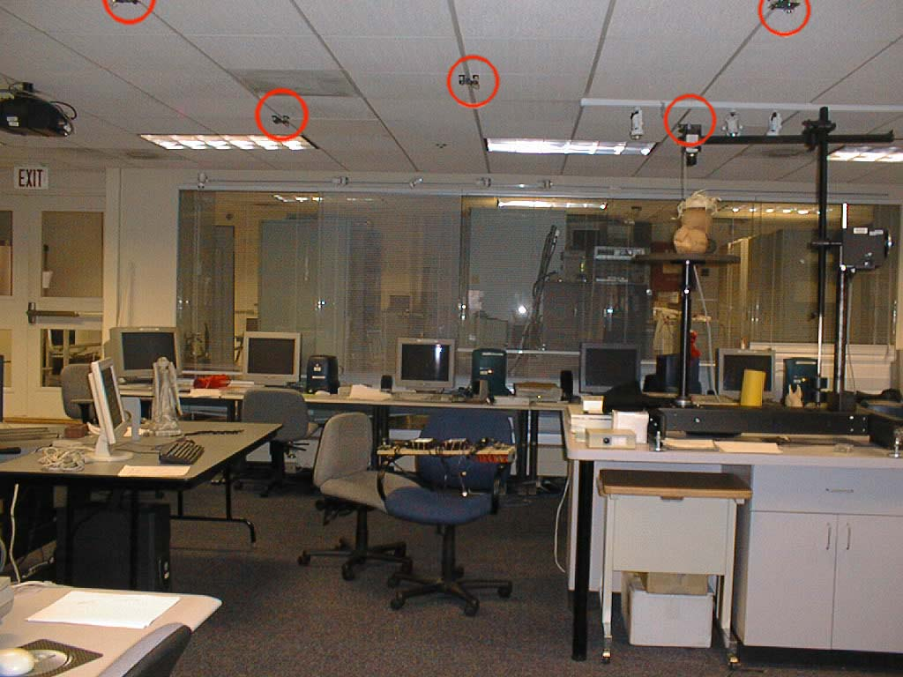
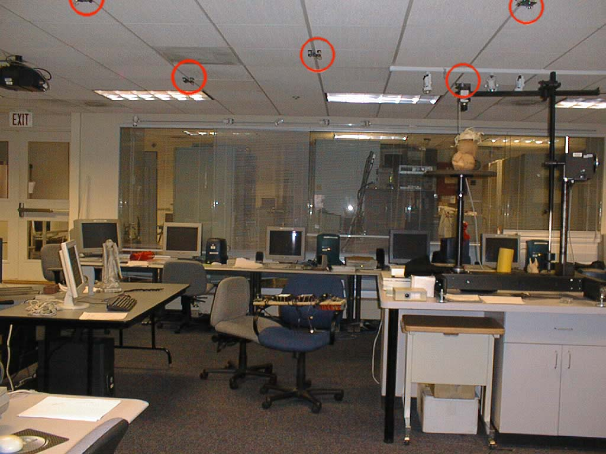

pets Introduction
The internet of things is the network of physical items embedded with electronics, software, sensors, actuators and network connectivity which enable objectives to gather and exchange data. These devices collect useful data with the help of existing technologies and then autonomously flow the data between other devices [1] .
These items represent a wide variety of devices such as heart monitoring implants, biochip transponders on farm animals, cameras streaming live feeds of wild animals in coastal waters, automobiles with built-in sensor or field operation devices that assist firefighters in search and rescue operations.
grade Research at UCL
The purpose of research at UCL is to develop mathematical techniques to analyzing the behavior
of networks about internet’s capacity with emphasis on queueing theory and fluid models.
Do you know that millions of devices use the internet in our real world? In addition, all of them sense congestion and back off when they detect overload, and no one device could see more than a minor fraction of the routers and links in the internet. And there is a very interesting thing found by UCL researchers in 2000 that the net outcome is that the Internet's capacity is shared to maximize the sum of each device's 'happiness'. The happiness function was not designed by purpose, it comes from the way which algorithms work.
extension Other Research
The research of internet of things is mainly focused on network architecture and applications of infrastructure management, medical and healthcare, media, transportation and metropolitan scale deployments. Below is some research conducted by MIT：
CarTel
[2]
:
A mobile sensor network system developing vehicular network protocols, software,
and services to encourage Smart Cars in the near future and make road travel
automatised while ensuring safety.
Cricket
[3]
:
An accurate indoor device location tracking system that is mainly intended for use
in areas where outdoor systems like the Global Positioning System don't work
well. Cricket is designed for low-power operation and can be used even in an
office environment as shown in the image below:

